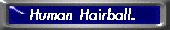

| Headlines | Top Page | New This Week | Recent Reports | News of Nature | Weekly Recipe | Readers Letters | Laboratory News | Back to Nible |
|
|
|
Schindler Re-emerges to Build Lifts
One of the heros of the 20th century was Schindler, and it was a fitting suprise to find out today
that he has re-emerged to build lifts and help people to reach higher heights. We went to his new comapany headquarters based in Berlin to find out more about his plans for the future, and what he hopes to gain by this new enterprise which he has taken apon himself to undertake.  Schindler himself was not available for interview, however company spokesman Mr R Efugee stated: "We, by now infamous, have suddenly distilled the knowledge of our fathers to bring to you news of a phenomenon. Glass is not really glass at all, but is in fact thick air. Of such ferocity do we speak that at once a stance was sought. Never mind. Our proof was yesterday proven when, whilst describing how thick the air was in Sweden, Doctor Fneen (named) bounced back into his seat, apparently struck by what could only have been a sheet of what was until that moment thought of as glass. But no. Alas glass is in fact merely a hibernating form of breathable gases. Hence glass and gas sound the same from a distance. |
| Alert! We, truthfully, cannot condone the swallowing of beakers by underwater operatives for this
will surely result in esophagoral laceration and certain demise. The reason for this is that
glass-air is so concentrated that swallowing it will force you to breath in as much air as you
would in your whole lifetime...in an instant.
We do, however, recommend that all beverages are consumed via tumblers for this will reduce then need to respirate outside allotted drinking hours and free your lungs up for other activities such as coughing. We have contacted all the glaziers that we are aware of and from now on windows will be known as gWindows and mirrors will be referred to as MiGGrrors to indicate that they are of gaseous nature." After this statement, many reporters were indeed bemused, in fact some were so bemused, they were stood there freeze framed for 9 days until now, many have been feeding them food. Further news will be reported when we all recover from this statement. by pEB |
Take Away Hats
 Jean Paul Naultier today launched a new range of
hat designs based on your traditional take away food establishments. He first came across this
idea when he spent a night in Leeds with the students from the university. He found that among
the student community, many people did indeed enjoy a good laugh and frequently went to fancy
dress parties with just a home made hat made from take away food cartons. His new range is based
on this experience Jean Paul Naultier today launched a new range of
hat designs based on your traditional take away food establishments. He first came across this
idea when he spent a night in Leeds with the students from the university. He found that among
the student community, many people did indeed enjoy a good laugh and frequently went to fancy
dress parties with just a home made hat made from take away food cartons. His new range is based
on this experienceby SG |




Authored by: Edward Yu